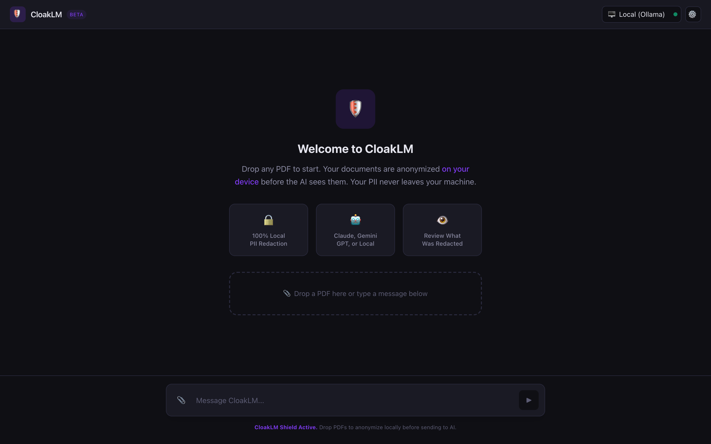

CloakLM is a private AI desktop app that redacts PII from PDFs locally before they reach the cloud. Use Claude, OpenAI, or Gemini without leaking company secrets.

Advanced PII redaction features for enterprise data security when using generative AI.
Bundled IBM Docling and GLiNER AI scan and redact 100% locally. No PII ever leaves your device.
Connect your own API keys for Claude, Gemini, OpenAI, or run local models via Ollama. You own your data flow.
Extracts deep layouts, tables, and complex formatting. Perfect for RAG-like document analysis without the security risk.
Anonymized entities (e.g., [PERSON_1]) are restored on-device, keeping the LLM in the dark while you get perfect answers.
Three simple steps to absolute PDF privacy in your AI workflow.
Drag and drop local documents into the secure CloakLM macOS interface.
The on-device AI scours the document for sensitive data and scrubs it offline.
The anonymized text is analyzed by your chosen model, ensuring total data sovereignty.